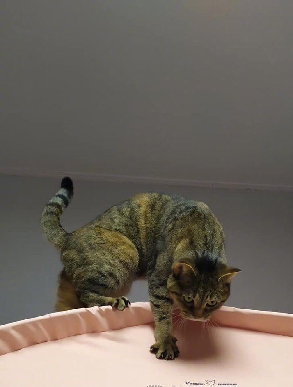

Fig.1 - cat, down, hill Fig.1 - cat, down, hill
Example
How to insert an image:
Example
Align image (with CSS):
aaa
aaa
aaa
Example
Add image border (with CSS):
Example
Add left and right margins to image (with CSS):
Example
Add top and bottom margins to image (with CSS):
Example
How to insert images from another folder or from another web site:
url/external-url:
abspath:
under-same-folder:
Example
How to add a hyperlink to an image:
Example
How to create an image map, with clickable regions. Each region is a hyperlink:
Example
Another image map, with clickable areas:
HTML <figure> Tag
HTML <figcaption> Tag
HTML <img> Tag
HTML <map> Tag
HTML <picture> Tag
======================
Definition and Usage
The <figure> tag specifies self-contained content, like illustrations, diagrams, photos, code listings, etc.
While the content of the <figure> element is related to the main flow, its position is independent of the main flow, and if removed it should not affect the flow of the document.
Tip: The <figcaption> element is used to add a caption for the <figure> element.
======================
Definition and Usage
The <figcaption> tag defines a caption for a <figure> element.
The <figcaption> element can be placed as the first or last child of the <figure> element.
======================
Definition and Usage
The <img> tag is used to embed an image in an HTML page.
Images are not technically inserted into a web page; images are linked to web pages. The <img> tag creates a holding space for the referenced image.
The <img> tag has two required attributes:
src - Specifies the path to the image
alt - Specifies an alternate text for the image, if the image for some reason cannot be displayed
Note: Also, always specify the width and height of an image. If width and height are not specified, the page might flicker while the image loads.
Tip: To link an image to another document, simply nest the <img> tag inside an <a> tag (see example below).
======================
Attributes
Attribute Value Description
alt text Specifies an alternate text for an image
crossorigin anonymous
use-credentials Allow images from third-party sites that allow cross-origin access to be used with canvas
height pixels Specifies the height of an image
ismap ismap Specifies an image as a server-side image map
loading eager
lazy Specifies whether a browser should load an image immediately or to defer loading of images until some conditions are met
longdesc URL Specifies a URL to a detailed description of an image
referrerpolicy no-referrer
no-referrer-when-downgrade
origin
origin-when-cross-origin
unsafe-url Specifies which referrer information to use when fetching an image
sizes sizes Specifies image sizes for different page layouts
src URL Specifies the path to the image
srcset URL-list Specifies a list of image files to use in different situations
usemap #mapname Specifies an image as a client-side image map
width pixels Specifies the width of an image
======================
Example
How to insert an image:
<img src="img_girl.jpg" alt="Girl in a jacket" width="500" height="600">
======================
Example
Align image (with CSS):
<img src="smiley.gif" alt="Smiley face" width="42" height="42" style="vertical-align:bottom">
<img src="smiley.gif" alt="Smiley face" width="42" height="42" style="vertical-align:middle">
<img src="smiley.gif" alt="Smiley face" width="42" height="42" style="vertical-align:top">
<img src="smiley.gif" alt="Smiley face" width="42" height="42" style="float:right">
<img src="smiley.gif" alt="Smiley face" width="42" height="42" style="float:left">
======================
Example
Add image border (with CSS):
<img src="smiley.gif" alt="Smiley face" width="42" height="42" style="border:5px solid black">
======================
Example
Add left and right margins to image (with CSS):
<img src="smiley.gif" alt="Smiley face" width="42" height="42" style="vertical-align:middle;margin:0px 50px">
======================
Example
Add top and bottom margins to image (with CSS):
<img src="smiley.gif" alt="Smiley face" width="42" height="42" style="vertical-align:middle;margin:50px 0px">
======================
Example
How to insert images from another folder or from another web site:
<img src="/images/stickman.gif" alt="Stickman" width="24" height="39">
<img src="https://www.w3schools.com/images/lamp.jpg" alt="Lamp" width="32" height="32">
======================
Example
How to add a hyperlink to an image:
<a href="https://www.w3schools.com">
<img src="w3html.gif" alt="W3Schools.com" width="100" height="132">
</a>
======================
Example
How to create an image map, with clickable regions. Each region is a hyperlink:
<img src="workplace.jpg" alt="Workplace" usemap="#workmap" width="400" height="379">
<map name="workmap">
<area shape="rect" coords="34,44,270,350" alt="Computer" href="computer.htm">
<area shape="rect" coords="290,172,333,250" alt="Phone" href="phone.htm">
<area shape="circle" coords="337,300,44" alt="Cup of coffee" href="coffee.htm">
</map>
======================
Default CSS Settings
Most browsers will display the <img> element with the following default values:
Example
img {
display: inline-block;
}
======================
======================
Definition and Usage
The <map> tag is used to define an image map. An image map is an image with clickable areas.
The required name attribute of the <map> element is associated with the <img>'s usemap attribute and creates a relationship between the image and the map.
The <map> element contains a number of <area> elements, that defines the clickable areas in the image map.
======================
Attributes
Attribute Value Description
name mapname Required. Specifies the name of the image map
======================
Example
An image map, with clickable areas:
<img src="workplace.jpg" alt="Workplace" usemap="#workmap" width="400" height="379">
<map name="workmap">
<area shape="rect" coords="34,44,270,350" alt="Computer" href="computer.htm">
<area shape="rect" coords="290,172,333,250" alt="Phone" href="phone.htm">
<area shape="circle" coords="337,300,44" alt="Cup of coffee" href="coffee.htm">
</map>
======================
Example
Another image map, with clickable areas:
<img src="planets.gif" width="145" height="126" alt="Planets"
usemap="#planetmap">
<map name="planetmap">
<area shape="rect" coords="0,0,82,126" href="sun.htm" alt="Sun">
<area shape="circle" coords="90,58,3" href="mercur.htm" alt="Mercury">
<area shape="circle" coords="124,58,8" href="venus.htm" alt="Venus">
</map>
======================
Default CSS Settings
Most browsers will display the <map> element with the following default values:
map {
display: inline;
}
======================
======================
Definition and Usage
The <picture> tag gives web developers more flexibility in specifying image resources.
The most common use of the <picture> element will be for art direction in responsive designs. Instead of having one image that is scaled up or down based on the viewport width, multiple images can be designed to more nicely fill the browser viewport.
The <picture> element contains two tags: one or more <source> tags and one <img> tag.
The browser will look for the first <source> element where the media query matches the current viewport width, and then it will display the proper image (specified in the srcset attribute). The <img> element is required as the last child of the <picture> element, as a fallback option if none of the source tags matches.
Tip: The <picture> element works "similar" to <video> and <audio>. You set up different sources, and the first source that fits the preferences is the one being used.
======================
Example
How to use the <picture> tag:
<picture>
<source media="(min-width:650px)" srcset="img_pink_flowers.jpg">
<source media="(min-width:465px)" srcset="img_white_flower.jpg">
<img src="img_orange_flowers.jpg" alt="Flowers" style="width:auto;">
</picture>
======================
abspath:
under-same-folder: